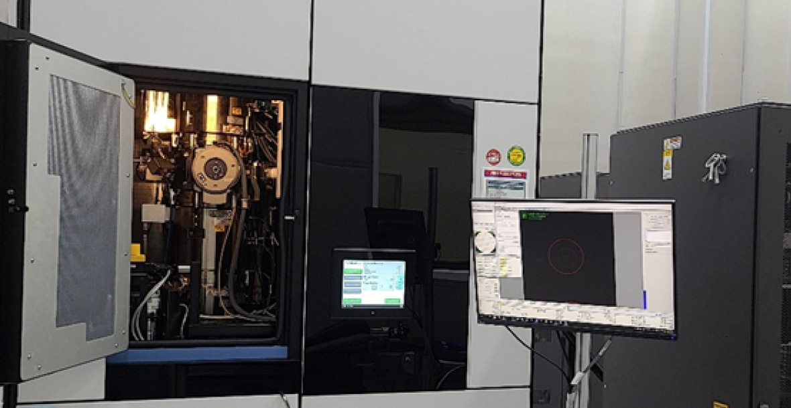
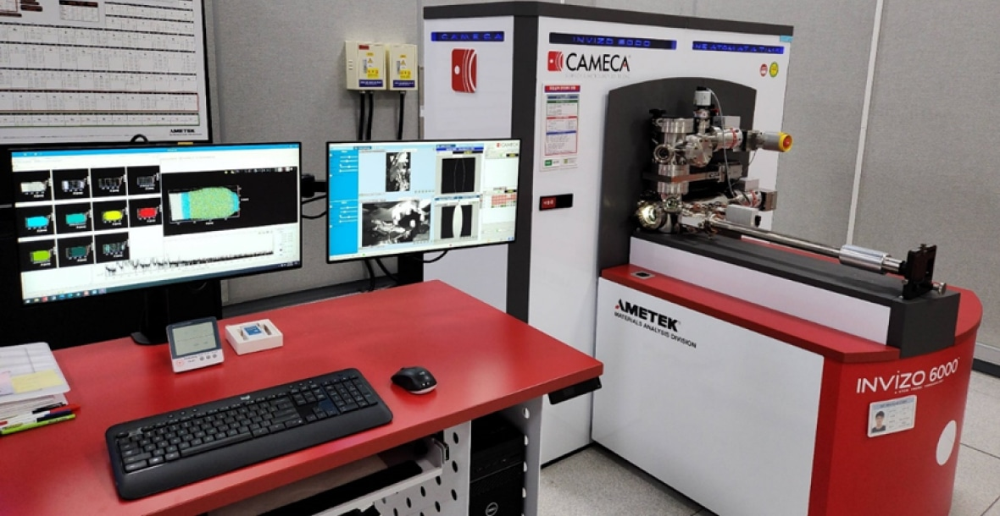
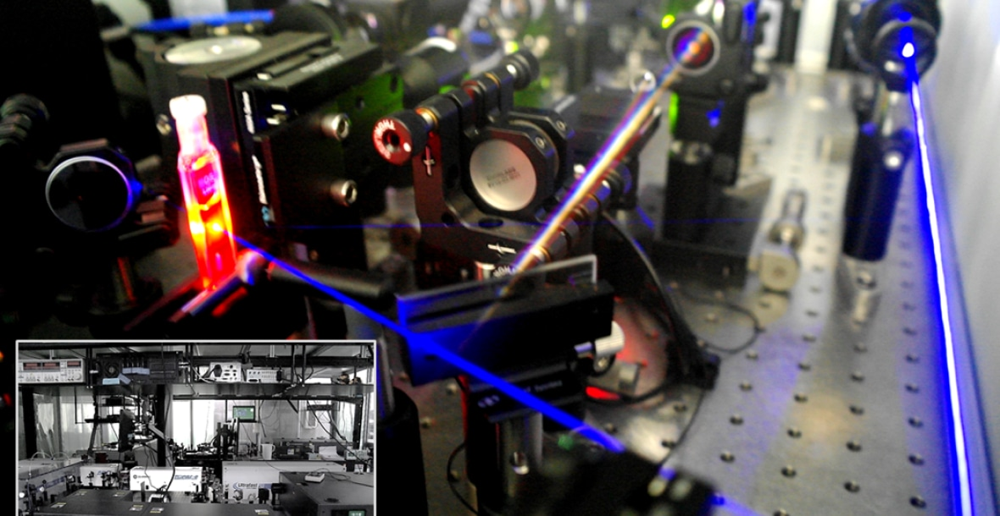
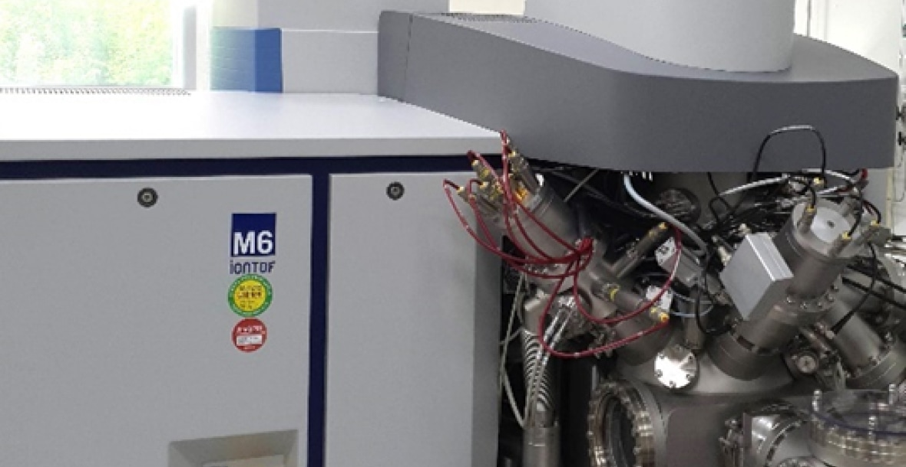
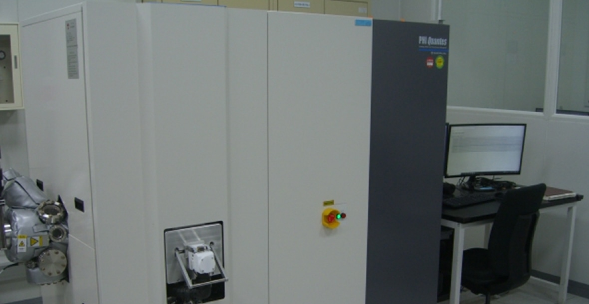
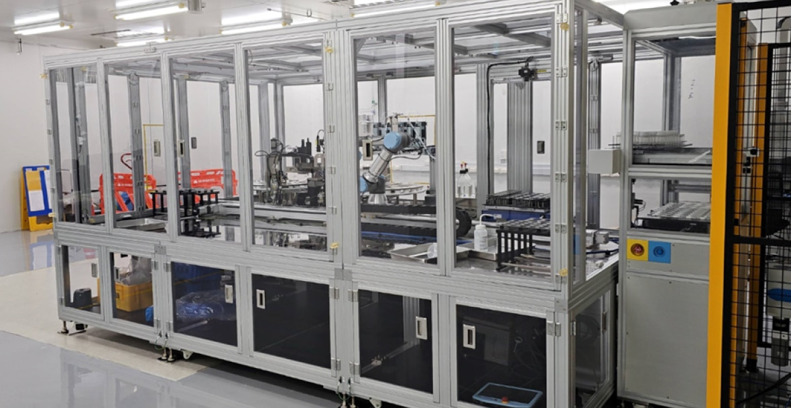

SAIT is equipped with world class R&D infrastructures such as Supercomputer, Aberration-Corrected Transmission Electron Microscopy (TEM), Atom Probe Tomography (APT), Femtosecond Spectroscopy’, Hybrid Secondary Ion Mass Spectrometry(SIMS), Hard X-ray
photoelectron spectroscopy (HAXPES), nano fab, etc. to conduct research by performing modeling, simulation, experiment, and nanoscaleanalysis.
SAIT has also developed organic material synthesis platform and semiconductor material evaluation platform based on AI and robotics technology to reduce the time and cost required for material development. These technologies can be utilized in various fields
and are expected to have a significant impact on future industrial development.
- 
- 
- 
- 
- 
- 
-
Aberration-Corrected Transmission Electron Microscopy (TEM)
Analytical equipment enabling atomic scale imaging and spectroscopy using double aberration corrector and monochromator
-
Atom Probe Tomography (APT) - Invizo 6000
3D imaging and chemical composition measurements at the atomic scale
(around 0.1-0.3nm resolution in depth and 0.3-0.5nm laterally) -
Atom Probe Tomography (APT) - Invizo 6000
Spectroscopic measurements observing ultrafast electron behaviors from femto- to micro-second in semiconductors and
electronic chemical compounds. Picture: Femtosecond pump-probe experiments on quantum dots in solution, measuring
ultrafast excitondynamcis (Blue: pump laser, Rainbow: supercontinuum probe, Red: photoluminescence from QDs) -
Hybrid Secondary Ion Mass Spectrometry(SIMS)
TOF-SIMS / Orbitrap Combination Instrument
-
Hard X-ray photoelectron spectroscopy (HAXPES)
HAXPES analyzes the chemical and electronic structure of the surface by measuring the kinetic energy of
photoelectrons emitted by the photoelectric effect. Using high energy X-rays from a Cr K-alpha source,
the information depth is more than twice that of conventional XPS -
AMS (Autonomous Material System) Platform
Autonomous organic material synthesis system based on AI and robotic technology
-
SEMEF (SEMiconductor processing-material's Evaluation & Formulation)
Autonomous formulation and evaluation system based on AI and robotic technology